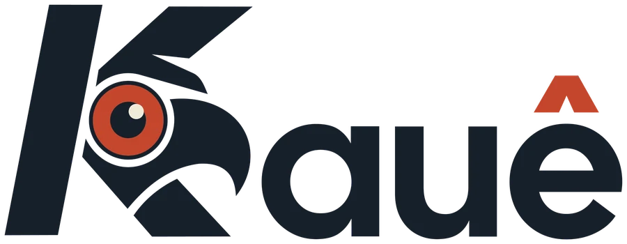
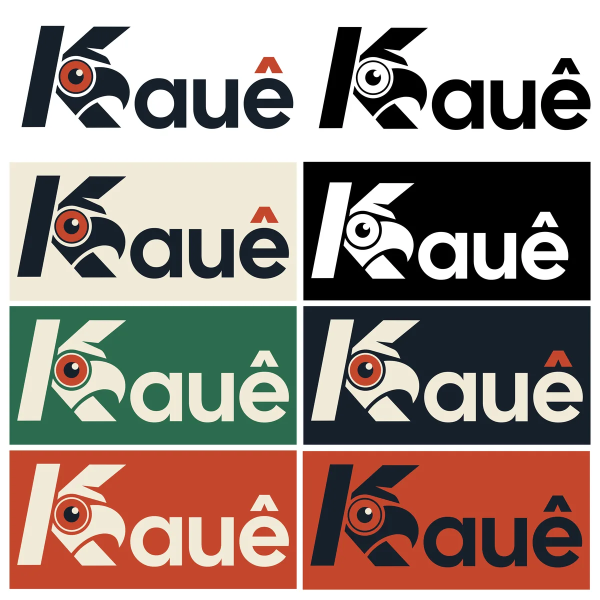

A marca Kauê
Um nome de raiz tupi, um gavião que vira letra e quatro cores tiradas das tintas e da mata. Esta página conta por que cada escolha foi feita e como usar a marca.

O nome
Kauê é um nome de origem tupi, considerado uma variação de Cauã, que vem do tupi kaûã e quer dizer gavião ou falcão. O nome também lembra o gavião-cauã, mais conhecido como acauã, ave de canto forte que muita gente reconhece pelo som.
O gavião enxerga longe e não deixa passar detalhe. É isso que se espera de quem corrige: atenção, precisão e cuidado. O "olho de gavião" é a promessa do app.
Por que um nome de gente? Porque é fácil de lembrar e de falar, e porque o app é pensado como um colega de trabalho: "o Kauê corrigiu", "manda para o Kauê".
Por que com K? Na escrita das línguas indígenas, esse som costuma ser grafado com K, como em kaûã. O K deixa o nome mais perto da sua origem e, de quebra, vira o desenho do símbolo.
O símbolo
O símbolo é a letra K desenhada como um gavião. A haste inclinada dá movimento; o braço de cima vira a cabeça; o de baixo, o bico curvo.
- O olho é o único ponto de urucum. É para onde o olhar vai primeiro.
- O bico aponta para a palavra e puxa a leitura: o símbolo funciona como o K de "Kauê".
- Os cortes retos e as curvas simples mantêm o desenho firme em tamanho pequeno, no ícone do celular e na fotocópia.
As cores
Duas cores vêm das tintas naturais usadas por povos indígenas na pintura corporal: o vermelho da semente de urucum e o escuro do fruto verde do jenipapo. As outras duas vêm da mata e da palha.
Urucum
#C4462DO vermelho da semente de urucum. Aparece só no olho do gavião e no acento do "ê". Nunca encosta direto no verde.
Jenipapo
#16202AO escuro do fruto verde do jenipapo. É a cor do texto e da marca sobre fundos claros.
Mata
#2B6C4EO verde da floresta. É o fundo principal da marca, nas telas e nas capas.
Palha
#F1EAD8O tom da palha trançada. É a marca sobre o verde e o fundo claro dos materiais.
A tipografia
Kauê Aa
Cal Sans
Usada no nome "Kauê" e nos títulos. É uma sans geométrica de letras redondas e espaçamento justo, feita para tamanhos grandes. Foi desenhada por Mark Davis para a Cal.com em 2021 e é de código aberto.
Aa B8 O0 Il1
Código 13525
Atkinson Hyperlegible Next e Mono
Usadas no texto, nas provas e nos códigos. Foram criadas pelo Braille Institute para pessoas com baixa visão: letras e números que costumam se confundir, como B e 8 ou O e 0, ganham formas bem distintas. A versão Next, de 2025, trouxe mais pesos e a versão monoespaçada.
A combinação diz o que o Kauê é: uma marca com personalidade nos títulos e leitura fácil para todo mundo no texto, inclusive na prova que chega às mãos do aluno.
As versões da marca



Como usar
- Anel do olho na cor do K: palha sobre o verde, jenipapo sobre o claro.
- Pupila sempre escura, em todas as versões.
- Acento do "ê" em urucum sobre fundo claro; na cor das letras nos outros fundos.
- Tamanho mínimo da horizontal: 28 pixels de altura. Menor que isso, use só o símbolo, como no ícone do app.
- Respiro em volta da marca de pelo menos a altura do olho.
- Urucum encostando direto no verde.
- Miolos do "a" e do "e" preenchidos: na fotocópia, as letras viram manchas.
- Fundos de urucum em peças do dia a dia ou em tamanho pequeno.
- Esticar, girar, trocar a fonte ou aplicar sombra na marca.
- Âmbar e outras cores fora da paleta.
Fontes
- Behind the Name: nomes tupi (Cauã, do tupi kaûã, "gavião, falcão")
- Dicio: palavras de origem indígena (Cauã e o gavião-acauã)
- Portal Amazônia: as tintas da pintura corporal indígena (urucum e jenipapo)
- Google Fonts: Atkinson Hyperlegible
- Wikipedia: Atkinson Hyperlegible e a versão Next
- Cal.com: Cal Sans